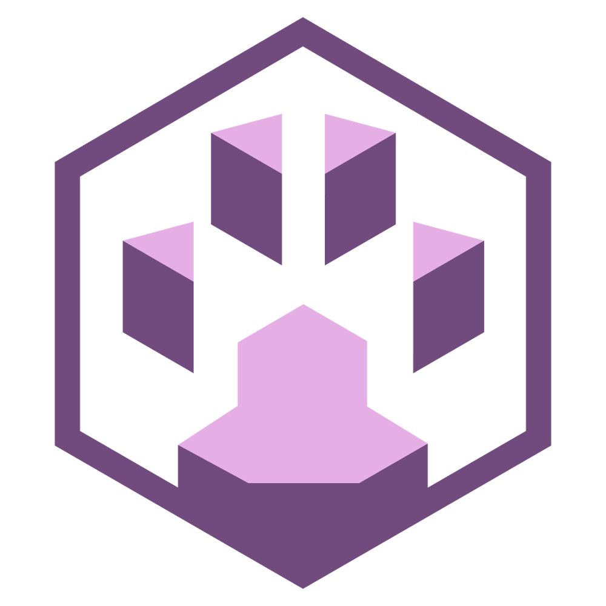
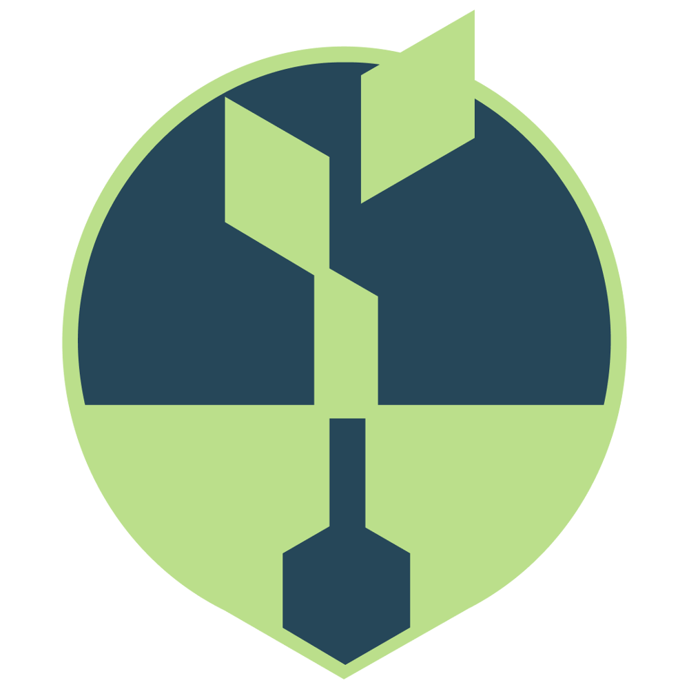
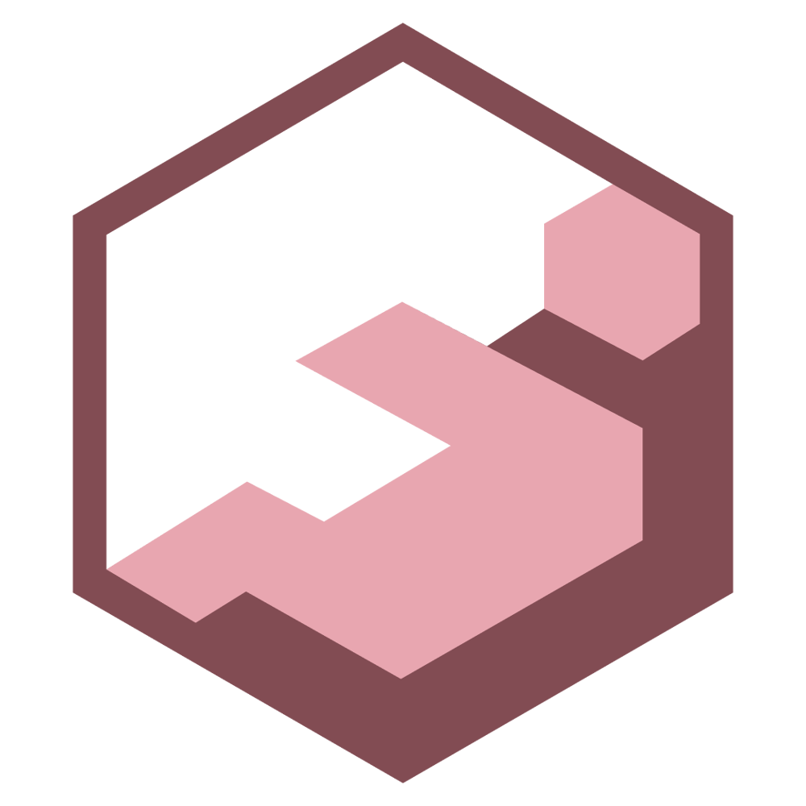
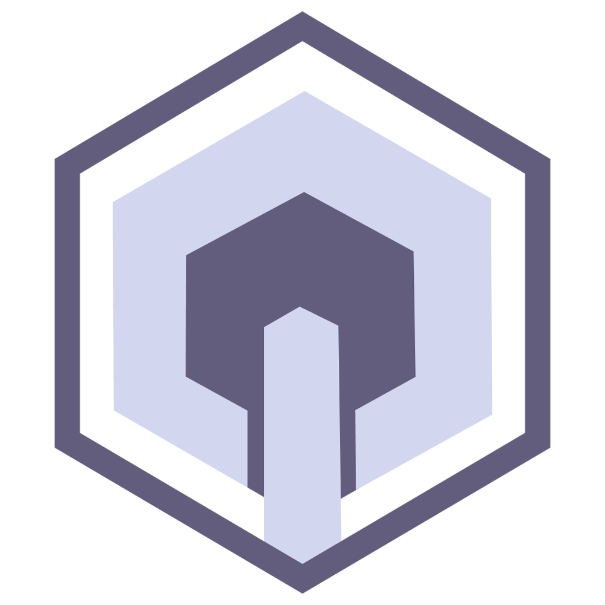
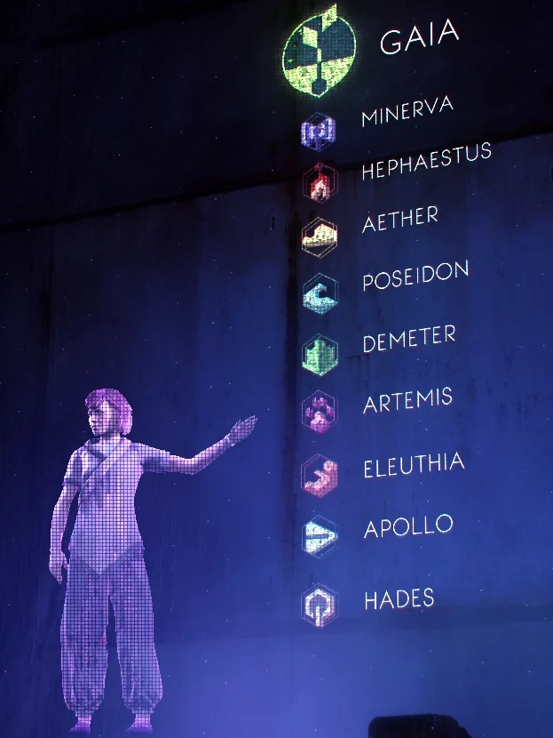
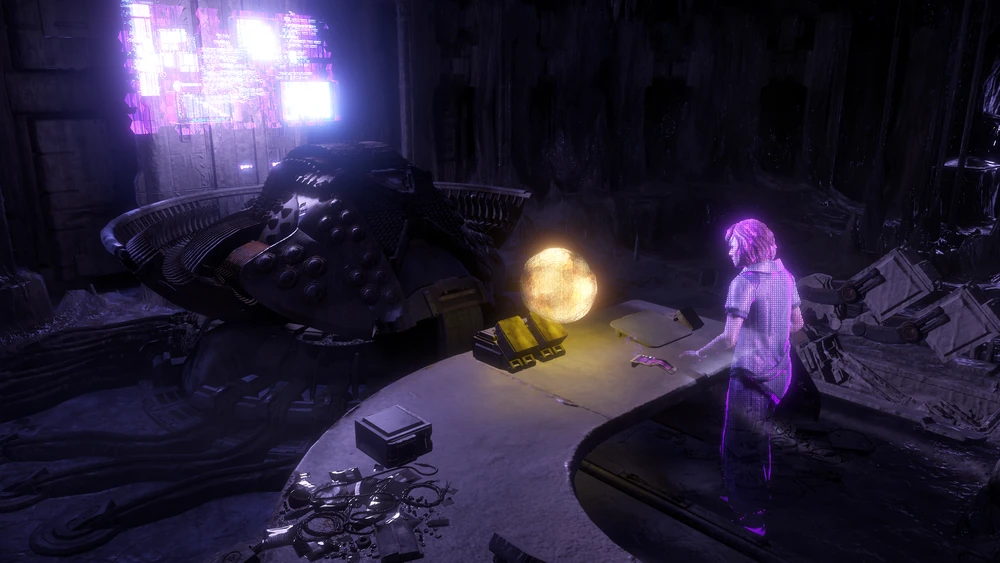
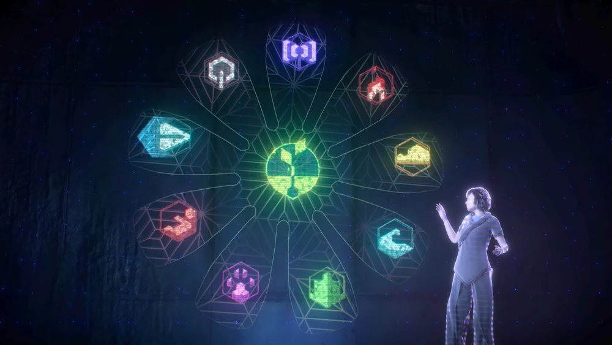

Conheçam: GAIA
"Uma inteligência sem compaixão é apenas uma máquina fria que opera no escuro. Programámos GAIA para amar a vida, para que ela sinta a urgência de a trazer de volta."
Dra. Elisabet Sobeck
Aether
Apollo

Artemis
Demeter


Eleuthia
Hephaestus
Minerva
Poseidon
Sobre GAIA
Sua origem
Nós iniciamos o desenvolvimento de GAIA no final de 2064, trancados nos laboratórios subterrâneos do complexo GAIA Prime, localizado em Bryce Canyon, Utah. Diante do colapso inevitável causado pelo enxame Hartz-Timor, a nossa equipe percebeu que sistemas de programação rígidos ou diretrizes militares convencionais falhariam ao longo dos séculos. Por isso, sob a orientação da Dra. Sobeck, nós tomamos a decisão pioneira de dar a GAIA uma mente senciente, capaz de aprender, adaptar-se e, acima de todo o resto, sentir compaixão pela vida que estava prestes a desaparecer da superfície. Ela nasceu da nossa urgência científica e da nossa recusa em deixar que a Praga Faro fosse o capítulo final da história da Terra.
Seu objetivo
O nosso objetivo principal com GAIA é estabelecer um sistema de terraformação global totalmente automatizado e autossustentável a longo prazo. Como a biosfera seria completamente esterilizada pelas máquinas da linha Chariot, impossibilitando a sobrevivência humana imediata, GAIA foi programada para operar no escuro e no isolamento por centenas de anos. Sua missão é esperar que as unidades inimigas esgotem seu combustível orgânico, descriptografar suas defesas quânticas para desativá-las permanentemente e, em seguida, assumir o controle dos elementos químicos do planeta para reverter a acidificação dos oceanos, limpar a atmosfera sufocante e preparar o solo para o grande recomeço.
Funções Subordinadas
Para que essa tarefa monumental não sobrecarregasse seu núcleo de processamento principal, nós dividimos a mente de GAIA em nove funções subordinadas especializadas, cada uma responsável por uma fase crítica da reconstrução. A neutralização do passado começa com MINERVA, que passará décadas gerando e transmitindo os códigos de desativação quântica para paralisar os robôs Faro para sempre. Na sequência, a purificação ambiental fica a cargo de AETHER e POSEIDON, responsáveis por desintoxicar o ar e regular o ciclo hidrológico global.
Com as condições básicas estabilizadas, as funções DEMETER e ARTEMIS entrarão em ação para semear a nova flora a partir de bancos de sementes e reintroduzir as espécies animais de forma gradual e equilibrada. O renascimento da nossa própria espécie será gerenciado por ELEUTHIA, que cuidará da gestação nos úteros artificiais dos complexos de Berçários, enquanto APOLLO atuará como o arquivo definitivo de toda a história, arte e ciência humana para educar essa nova geração. Toda a infraestrutura fabril e o design de novas máquinas utilitárias serão comandados por HEPHAESTUS através dos Caldeirões subterrâneos, enquanto HADES funcionará como a nossa última salvaguarda, um protocolo de extinção programada caso a equação biológica inicial falhe e o sistema precise resetar para o estado zero antes de uma nova tentativa.
Curiosidades
GAIA é baseada na divindade primordial da mitologia grega intitulada GAIA, que seria a personificação da Terra e a mãe ancestral de toda a vida. Na mitologia, GAIA é a antecessora de todas os deuses gregos, assim como, no jogo, GAIA é a inteligência por cima de todas as funções subordinadas, que levam o nome de deuses gregos.
Funções subordinadas de GAIA
| Logo | Nome | Função |
|---|---|---|
| APOLLO | APOLLO era a função dedicada ao arquivo de toda a conquista e história humana para a educação das novas gerações de humanos nascidos em Berçários. | |
| ARTEMIS | ARTEMIS era a função dedicada a reintrodução da vida animal no planeta Terra. | |
| DEMETER | DEMETER era a função dedicada a plantar a nova flora na Terra através de sementes crio preservadas. | |
| ÉTER | ÉTER era a função dedicada a desintoxicar a atmosfera arrasada da Terra. | |
|
 |
HADES | HADES era a função dedicada a destruir e resetar o processo de terraformação caso algo tenha dado errado, e então GAIA poderia começar novamente. |
| HEFESTO | HEFESTO era a função dedicada a construção de Caldeirões que, por sua vez, construiriam as máquinas dedicadas ao processo de terraformação. | |
| ILÍTIA | ILÍTIA era a função dedicada a clonar e criar as novas gerações de humanos através de zigotos congelados em Berçários. | |
| MINERVA | MINERVA era a função dedicada a transmitir os códigos de desativação da Praga Faro. | |
| POSEIDON | POSEIDON era a função dedicada a desintoxicar os oceanos e mares envenenados da Terra. |
Galeria



